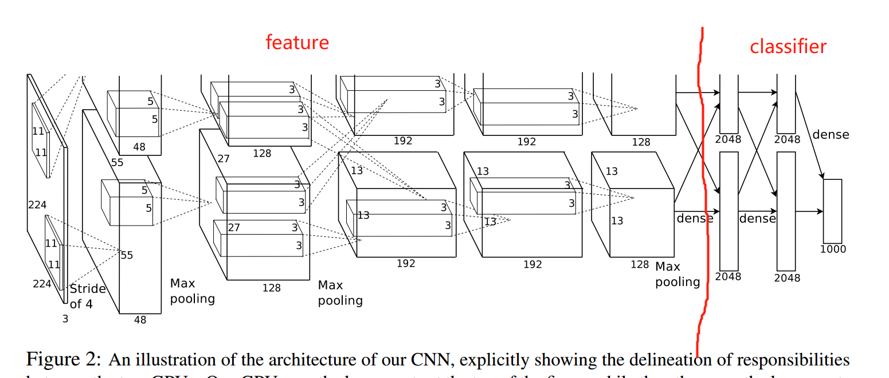
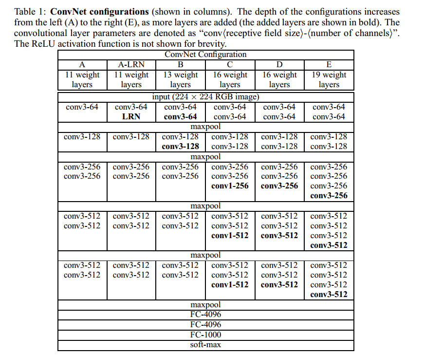
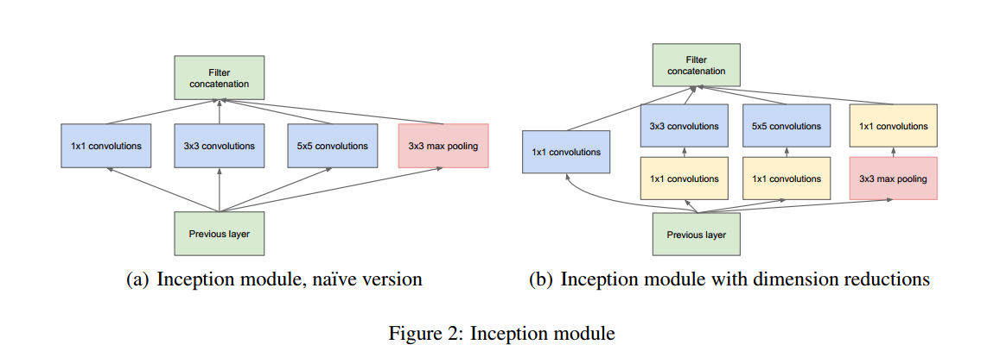
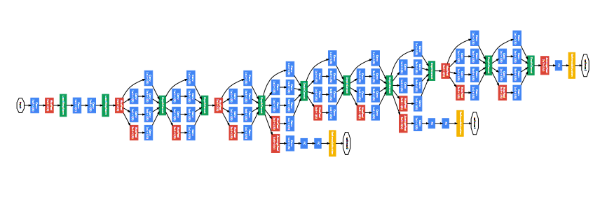
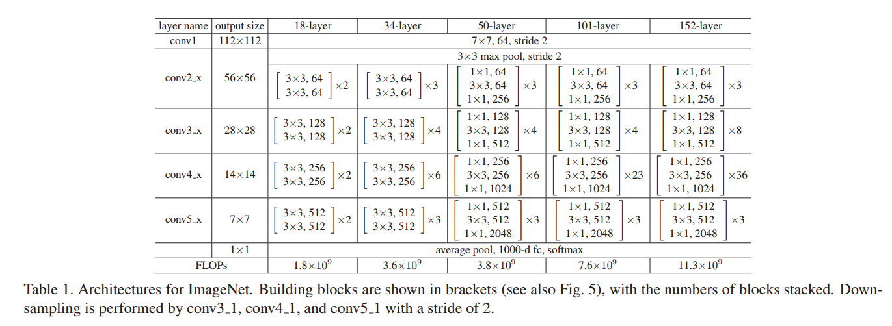
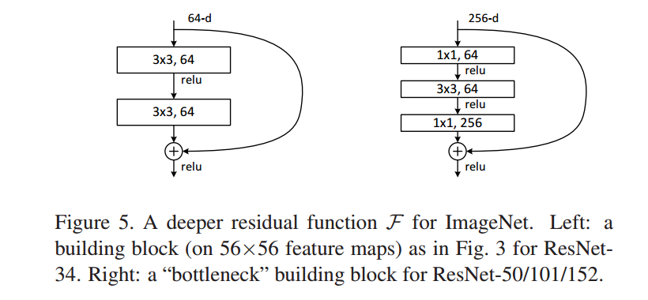
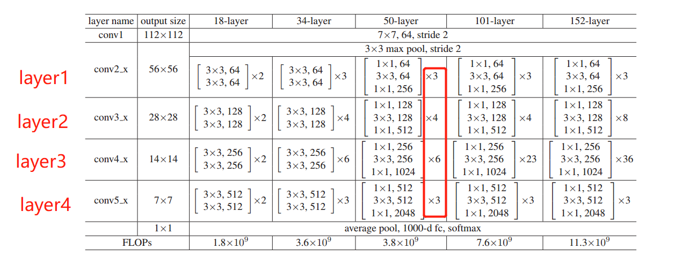

4.6 经典Model代码分析
torchvision中提供了一些经典的卷积神经网络模型实现，本小节将挑选部分进行分析，学习torchvision是如何构建复杂的网络模型，学习它们的代码风格、代码规范。
AlexNet
出自：ImageNet Classification with Deep Convolutional Neural Networks
模型结构图如下图所示：整体可分为前半部分的特征提取与后半部分的分类。

代码分析：
D:\Anaconda_data\envs\pytorch_1.10_gpu\Lib\site-packages\torchvision\models\alexnet.py
代码中定义了一个AlexNet类与一个alexnet函数，这样的封装形式贯穿整个torchvision的模型定义。
AlexNet类是nn.Module，其中定义了AlexNet模型的具体结构，而alexnet函数则是对Alexnet类的包装，并且实现加载预训练参数的功能，即以下代码：
model = AlexNet(**kwargs)
if pretrained:
state_dict = load_state_dict_from_url(model_urls["alexnet"], progress=progress)
model.load_state_dict(state_dict)
return model
从此也知道，torchvision中定义模型所采用的预训练模型均是通过指定的url下载，并存储于本地磁盘供下一次使用。
由于“网络问题”，通常建议大家通过代码中给出的url自行下载权重文件，然后在自己的代码中使用load_state_dict方法加载预训练参数。
分析了alexnet.py整体结构，下面回到AlexNet类本身，看看具体模型如何写的。
class AlexNet(nn.Module):
def __init__(self, num_classes: int = 1000) -> None:
def forward(self, x: torch.Tensor) -> torch.Tensor:
AlexNet采用熟悉的方式定义了两个函数，熟悉4.1小结中的知识点的话，这里不比多说。
forward函数中第48行代码值得注意，二维特征图要输入到Linear层，通常通过flatten函数对特征图进行变换。
def forward(self, x: torch.Tensor) -> torch.Tensor:
x = self.features(x)
x = self.avgpool(x)
x = torch.flatten(x, 1) # Line 48
x = self.classifier(x)
return x
总结：
采用函数形式封装模型类，额外提供预训练权重加载功能；
Linear层之前可通过torch.flatten将数据变为一维向量；
VGG
VGG出自：Very Deep Convolutional Networks For Large-Scale Image Recognition
其共有4种深度，分别是11， 13， 16， 19层，用得比较多的VGG16、19。VGG的代码就比AlexNet复杂了，因为它涉及8个具体的网络模型定义，因此不能再使用面向过程的方式进行编写，需要将共性的部分抽象出来，这一份代码值得新手仔细、认真学习。
首先是大体了解VGG整体结构，网络结构示意图如下图所示：

VGG最大特点是2个3x3、3个3x3卷积层的堆叠，并且堆叠总共分5次，最后接入三个FC层。从此可知，核心是如何将特征提取部分进行抽象，请大家带着这个问题观察代码：D:\Anaconda_data\envs\pytorch_1.10_gpu\Lib\site-packages\torchvision\models\vgg.py
vgg.py中定义了VGG类、_vgg函数、make_layers函数、cfgs字典，以及一系列具体网络模型封装的函数，如vgg11，vgg13， vgg16等。
看过alexnet.py，这里能猜出VGG类是一个nn.module。
_vgg函数：vgg函数接收具体的网络参数，以此决定返回哪一个vgg模型；
vggxxx：定义了具体VGG所需要的参数，并调用_vgg函数得到具体模型；
make_layers函数：创建可抽象出来、共性的网络层函数，即网络结构图中的5次堆叠部分。
cfgs字典：配置各具体vgg模型所需要的参数，主要在make_layers中使用。
下面以vgg16为例，观察vgg.py是如何实现它的。
看到153行代码：
def vgg16(pretrained: bool = False, progress: bool = True, **kwargs: Any) -> VGG:
return _vgg("vgg16", "D", False, pretrained, progress, **kwargs)
可知道，vgg16是对_vgg的封装，并且固定了两个参数"vgg16" 和 "D"。
跳到94行代码：
def _vgg(arch: str, cfg: str, batch_norm: bool, pretrained: bool, progress: bool, **kwargs: Any) -> VGG:
if pretrained:
kwargs["init_weights"] = False
model = VGG(make_layers(cfgs[cfg], batch_norm=batch_norm), **kwargs)
if pretrained:
state_dict = load_state_dict_from_url(model_urls[arch], progress=progress)
model.load_state_dict(state_dict)
return model
可知道_vgg调用了VGG类得到最终的模型，并且给VGG传入了make_layers函数创建的网络层；
通过这行代码可知道，需要进入make_layers去观察如何创建网络层的。进入make_layers前，需要知道cfgs[cfg]当前传入的是：
'D': [64, 64, 'M', 128, 128, 'M', 256, 256, 256, 'M', 512, 512, 512, 'M', 512, 512, 512, 'M'],
跳到69行代码：
def make_layers(cfg: List[Union[str, int]], batch_norm: bool = False) -> nn.Sequential:
layers: List[nn.Module] = []
in_channels = 3
for v in cfg:
if v == "M":
layers += [nn.MaxPool2d(kernel_size=2, stride=2)]
else:
v = cast(int, v)
conv2d = nn.Conv2d(in_channels, v, kernel_size=3, padding=1)
if batch_norm:
layers += [conv2d, nn.BatchNorm2d(v), nn.ReLU(inplace=True)]
else:
layers += [conv2d, nn.ReLU(inplace=True)]
in_channels = v
return nn.Sequential(*layers)
从这里可知道是对cfg中进行for循环，不断的构建网络层，并且添加到list中，最后组装成一个Sequential的形式。这里的代码逻辑就是网络结构图中的抽象，把四种模型的共性地方抽象出来，然后通过不同的配置参数可生成vgg11, vgg13, vgg16, vgg19。这里的代码值得学习。
弄清楚make_layers是生成前面一系列卷积层的堆叠Sequential之后，继续进入VGG类观察。
跳到25行代码，看一个Module，可以先看forward函数，再看forward中的属性是怎么来的。
def forward(self, x: torch.Tensor) -> torch.Tensor:
x = self.features(x)
x = self.avgpool(x)
x = torch.flatten(x, 1)
x = self.classifier(x)
return x
可以发现它的forward十分简洁，因为vgg模型就是以简洁出名的，像一个糖葫芦一样串起来即可。接着去看看self.features是什么，怎么来的，这个需要到init函数中寻找。
跳到34行代码：self.features = features
由此可知道，VGG特征提取部分的网络层均是通过make_layers函数定义的那个Sequential。
接着36行代码的classifier就没啥好说的。
接着的第45行代码出现了新内容，权重初始化。调用了_initialize_weights函数对VGG模型进行权重初始化。众所周知，良好的权重初始化对模型训练是至关重要的，早期对于权重初始化有许多的研究，比较著名的有Xavier方法、MSRA（Kaiming）方法。
预告：具体的权重初始化方法将在下一小节详细介绍。
下面观察如何编写函数对VGG进行权重初始化：跳转55行
def _initialize_weights(self) -> None:
for m in self.modules():
if isinstance(m, nn.Conv2d):
nn.init.kaiming_normal_(m.weight, mode="fan_out", nonlinearity="relu")
if m.bias is not None:
nn.init.constant_(m.bias, 0)
elif isinstance(m, nn.BatchNorm2d):
nn.init.constant_(m.weight, 1)
nn.init.constant_(m.bias, 0)
elif isinstance(m, nn.Linear):
nn.init.normal_(m.weight, 0, 0.01)
nn.init.constant_(m.bias, 0)
此函数的逻辑就是遍历所有Module，并判断Module类型，根据不同的Module类型设置不同的初始化方法，如卷积层则用kaiming方法设置weight，bias全部设置为0；BN层的weight设置为1，bias设置为0；全连接层的weight用正态分布进行随机初始化，bias设置为0。
到这里一个具体的VGG模型定义就讲完了，下面总结一下它们的调用关系与逻辑。
vgg16() --> _vgg() --> make_layers --> VGG：最核心在于如何构建一个模块（函数也好、类也好）可以接收不同的参数（cfgs）就能生成对应VGG的特征提取部分的网络层（一个大的Sequential）。
GoogLeNet
GoogLeNet-V1 出自 Going deeper with convolutions，后续也有V2，V3，V4，这里不进行介绍。
V1的提出最大的特点在于提出Inception模块，它是一个多分支的特征提取模块，如下图所示：

网络结构如下图所示：

代码并不复杂，但其中的Inception模块的编写，是之前没有遇到的，可以借鉴学习。
观察D:\Anaconda_data\envs\pytorch_1.10_gpu\Lib\site-packages\torchvision\models\googlenet.py
可以看到熟悉的定义了具体的Module——GoogLeNet类，模型的封装调用函数——googlenet，以及从GoogLeNet模型抽象出来的、反复需要使用的模块——Inception、InceptionAux、BasicConv2d。
这里面的代码并不复杂，这里不逐行分析，只把GoogLeNet类的逻辑关系理一理。
首先，将反复使用的模块抽象成一个类，这样在使用的时候只需要一行代码即可定义好，如BasicConv2d：包含了卷积层+BN层；
Inception：包含四个分支的处理并合并最终特征图；
InceptionAux：辅助分类层输出。
然后在init函数中像搭积木一样，把需要用到的模块逐一定义
最后在forward函数中调用定义好的网络层即可。
总结：
反复使用的模块抽象为一个Moudle类，并作为参数进行调用。好处在于当想修改这些基础元素模块的时候，仅需要重新写一个Module类替换即可，并不需要改动GoogLeNet类当中的任何代码（在resnet中会有体现）。要想理解好这一点，请仔细体会这几行代码
blocks = [BasicConv2d, Inception, InceptionAux]
conv_block = blocks[0]
inception_block = blocks[1]
inception_aux_block = blocks[2]
Resnet
ResNet出自何恺明的《Deep Residual Learning for Image Recognition》，是目前工业界应用最广泛的卷积神经网络。
网络结构如下图所示，有ResNet-18， 34， 50， 101， 152，使用较多的为ResNet-50。其结构特点也是模块的堆叠，如表格中看到的x2， x3，x4, x6表示的是一个模块堆叠2次、3次、4次、6次。

在resnet模型中，最大的特点在于采用了残差结构的模块，如下图所示：

这里有两种形式，一种是BasicBlock，另外一种是resnet50/101/152用的Bottleneck。
下面就来看看D:\Anaconda_data\envs\pytorch_1.10_gpu\Lib\site-packages\torchvision\models\resnet.py
是如何实现这一系列复杂的resnet模型。
提示：pycharm中按住Ctrl+Shift+ "-" ，可以把代码块收起来，可以快速浏览resnet.py下的主要内容，可以发现，还是熟悉的结构，分别有
- ResNet类
- _resnet函数
- resnet18\34\50...一系列具体模型函数
- 抽象出来的基础模块：BasicBlock、Bottleneck、conv1x1和conv3x3。
这其中最为特色的是BasicBlock和Bottleneck，分别对应论文图5中的两个结构，它们将在不同的模型中使用。
下面就看看BasicBlock和Bottleneck到底是如何使用的。
跳到144行代码：class ResNet(nn.Module)，观察init函数里是如何使用block的。
跳到第178行代码：self.layer1 = self._make_layer(block, 64, layers[0])，在make_layer函数中使用了block进行网络层的构建。这点与VGG中的make_layers类似。
跳到205行代码：
def _make_layer(
self,
block: Type[Union[BasicBlock, Bottleneck]],
planes: int,
blocks: int,
stride: int = 1,
dilate: bool = False,
) -> nn.Sequential:
norm_layer = self._norm_layer
downsample = None
previous_dilation = self.dilation
if dilate:
self.dilation *= stride
stride = 1
if stride != 1 or self.inplanes != planes * block.expansion:
downsample = nn.Sequential(
conv1x1(self.inplanes, planes * block.expansion, stride),
norm_layer(planes * block.expansion),
)
layers = []
layers.append(
block(
self.inplanes, planes, stride, downsample, self.groups, self.base_width, previous_dilation, norm_layer
)
)
self.inplanes = planes * block.expansion
for _ in range(1, blocks):
layers.append(
block(
self.inplanes,
planes,
groups=self.groups,
base_width=self.base_width,
dilation=self.dilation,
norm_layer=norm_layer,
)
)
return nn.Sequential(*layers)
在此函数中使用block（是一个基础模块的类，是BasicBlock或Bottleneck）定义网络层，然后堆叠起来，最后使用Sequential进行包装，构成一个整体。
回到init函数可知道，178-184行代码所构建的模块对应了网络结构的四个部分，对应关系如下图所示：
self.layer1 = self._make_layer(block, 64, layers[0])
self.layer2 = self._make_layer(block, 128, layers[1], stride=2, dilate=replace_stride_with_dilation[0])
self.layer3 = self._make_layer(block, 256, layers[2], stride=2, dilate=replace_stride_with_dilation[1])
self.layer4 = self._make_layer(block, 512, layers[3], stride=2, dilate=replace_stride_with_dilation[2])

在这里，可以发现resnet18和34用的是BasicBlock， resnet50/101/152用的是Bottleneck
def resnet18(pretrained: bool = False, progress: bool = True, **kwargs: Any) -> ResNet:
return _resnet("resnet18", BasicBlock, [2, 2, 2, 2], pretrained, progress, **kwargs)
def resnet50(pretrained: bool = False, progress: bool = True, **kwargs: Any) -> ResNet:
return _resnet("resnet50", Bottleneck, [3, 4, 6, 3], pretrained, progress, **kwargs)
BasicBlock和Bottleneck的使用与googlenet中的blocks呼应上了，请大家仔细对比。
resnet总结
resnet的搭建是将block抽象出来提供接口，由用户自行传入，并且设定堆叠次数，如resnet18就是BasicBlock, [2, 2, 2, 2]， resnet50就是 Bottleneck, [3, 4, 6, 3]，处处体现了面向对象的编程思维，值得学习。
总结
本小节从简单的AlexNet到复杂的ResNet进行了代码分析，剖析了pytorch的代码结构，编写逻辑以及思想，其中面向对象的思维值得认真学习借鉴。
VGG中的make_layers()：通过参数配置形式搭建一个大的Sequential；
GoogLeNet的BasicConv2d, Inception, InceptionAux、ResNet的BasicBlock、Bottleneck、conv1x1、conv3x3都是抽象的基础模块。
本小节在多出看到了权重初始化方法，好的权重初始化是模型训练的第一步，下一小节将介绍pytorch提供的系列权重初始化方法及其应用。